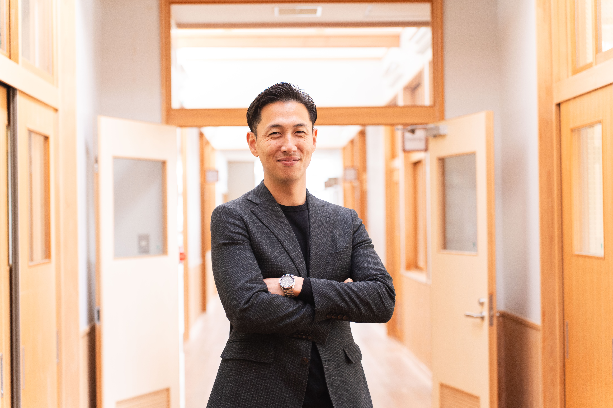

住
"住み"に集まる
- 先進的な子育て支援
- 安価な土地を生かした定住・移住促進
- 安定した生活インフラの供給
- 安心して暮らせる医療、福祉提供体制の堅持
- 公共交通体系の充実

限られた財源を活用しながら、町民の皆様のための施策を展開
子育て世帯の経済的負担を軽減し、安心して子どもを育てられる環境を整備。
約2億円の財政効果を実現。持続可能な行政運営の基盤を構築。
町内の遊休施設を町民と共に巡り、活用方法を一緒に考える取り組み。
自転車購入補助や交通費補助により、通学にかかる家庭の負担を軽減。
半年間にわたり水道基本料を減免し、町民の生活を支援。
安定した財政基盤の構築に向け、公共施設の再編に着手。
未来のための種まきを本格化
地域の公共資源を活かし、子どもたちが安心して過ごせる場を提供。
砥部中学校、麻生小学校体育館にエアコンを設置。令和8年度中完成予定。
増加する需要に対応し、放課後の子どもの受け皿を拡充。令和8年度中完成予定。
ひとり親家庭の養育費確保を支援し、子どもの生活の安定を図る。
10,000円分の商品券を配布し、町民の暮らしを支援。7月実施予定。
先導的官民連携支援事業として、観光を軸とした地域活性化に取り組む。
Mission「50年先も続く砥部町を創る」
Vision「人が集まる町へ。」
4つのコンセプトとそれに紐付く施策が、人が集まる町を構成する。
安定した財政基盤（選択と集中）
オープンな町へ。